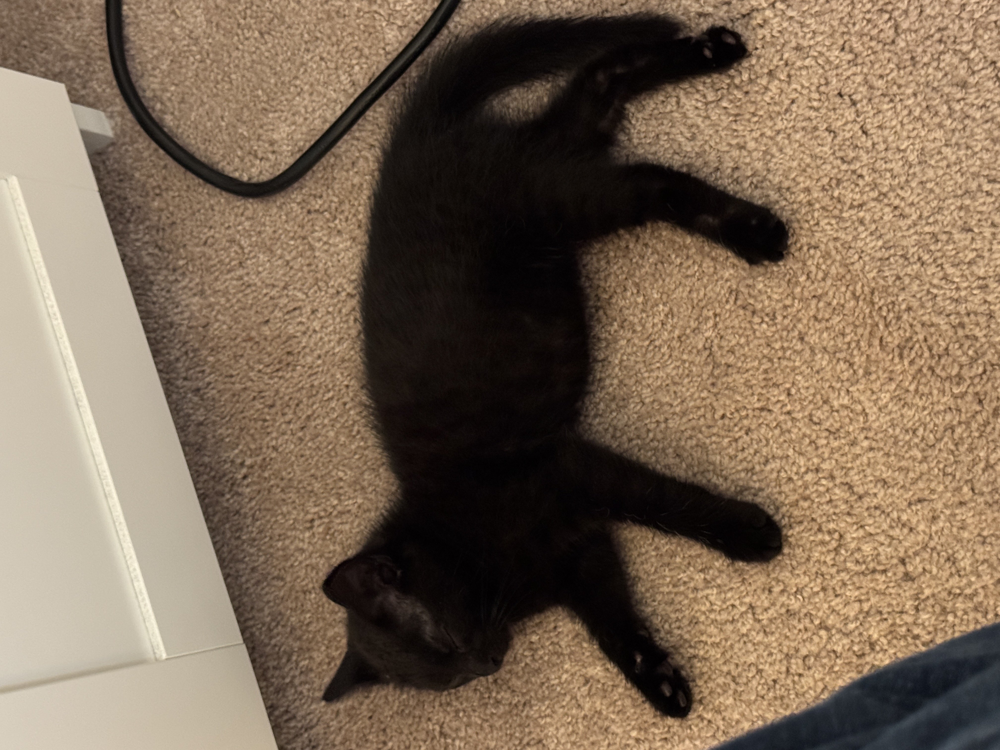
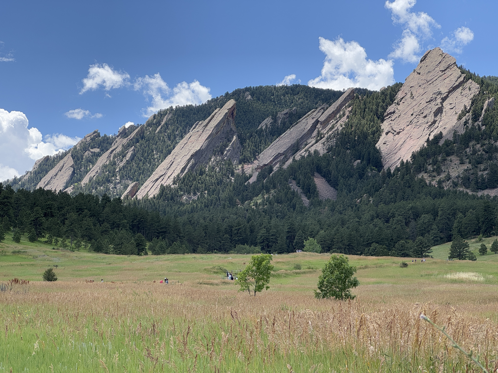
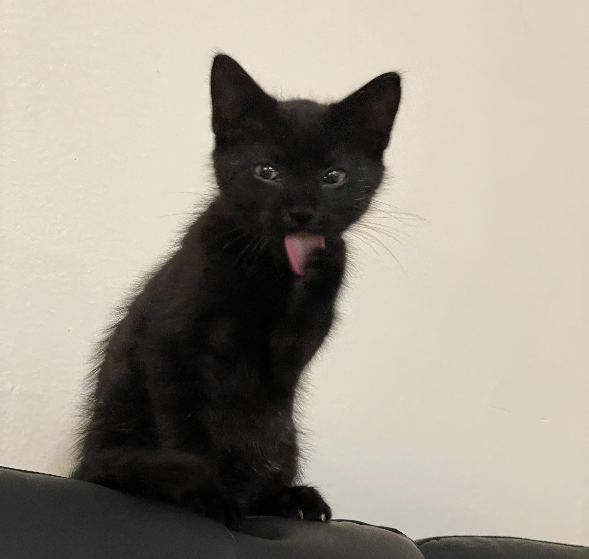
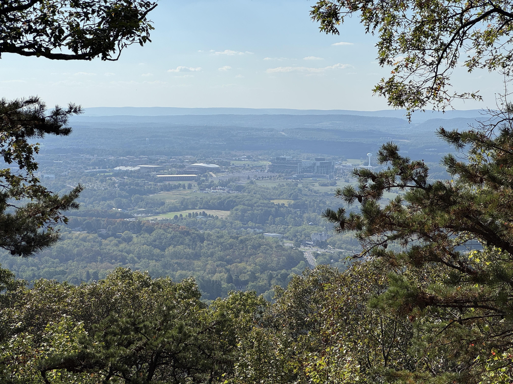
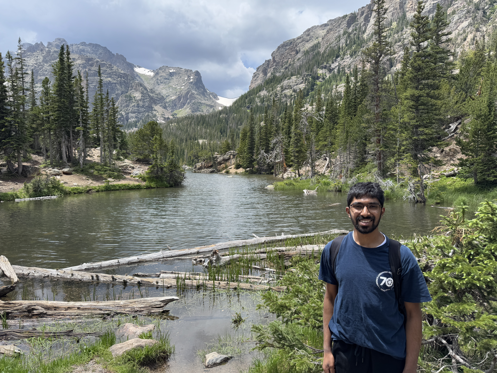
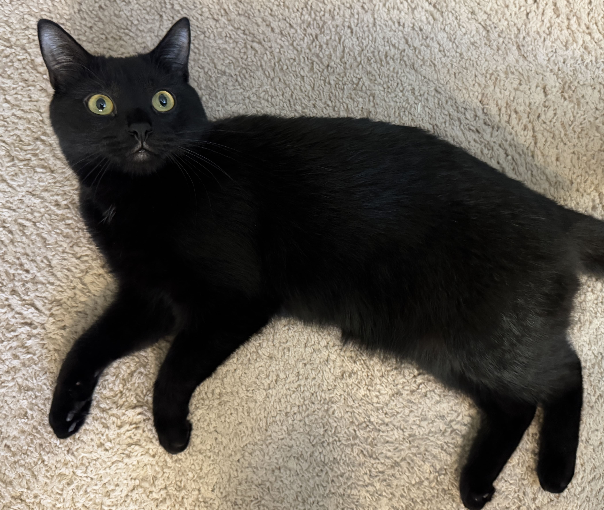

A small collection of photographs. Some of them are of my best friend Tapio, who is an expert in entanglement entropy in electronic systems (he likes playing with chargers) and spontaneous symmetry-breaking (cat state).





